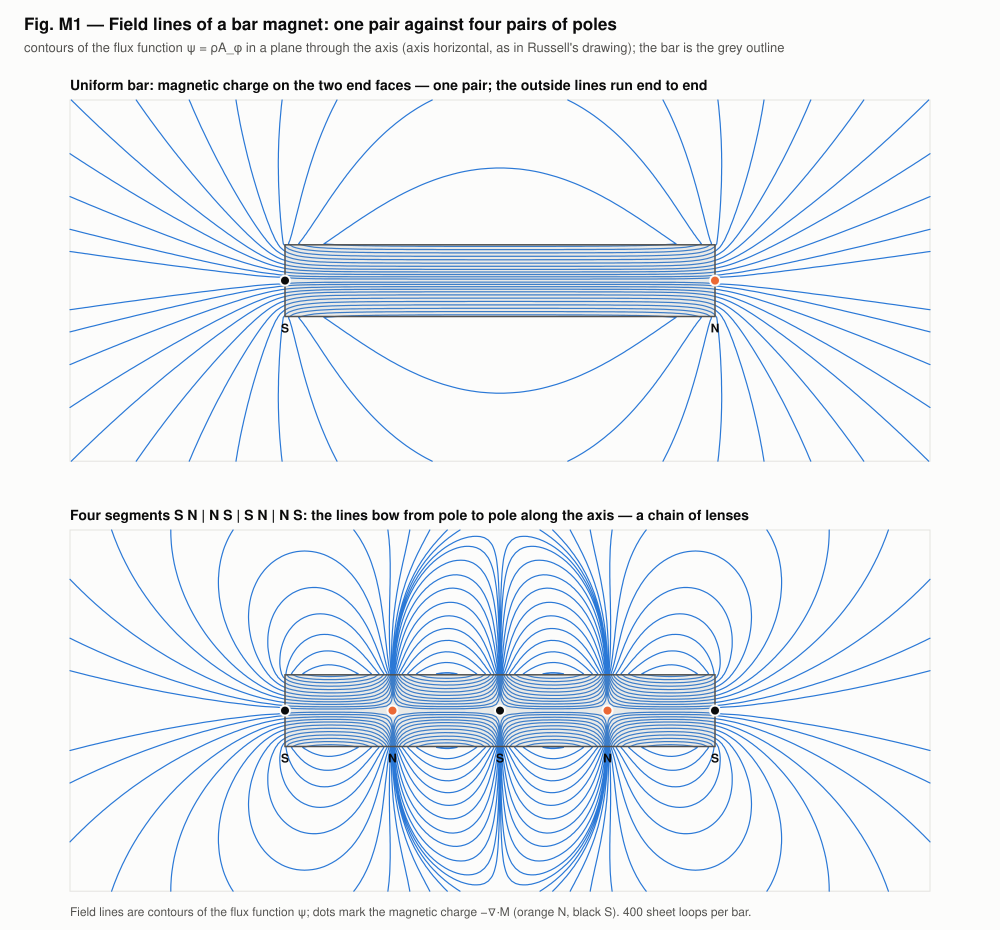
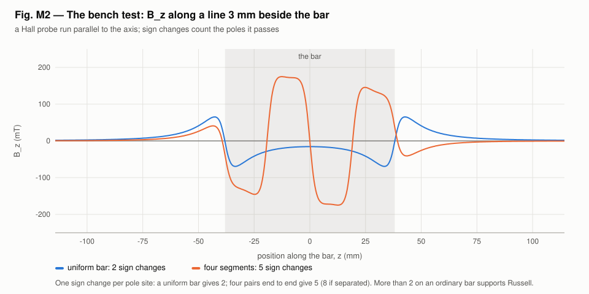

<!-- SPDX-License-Identifier: GPL-3.0-only OR LicenseRef-kronspice-Commercial -->
<!-- Copyright (C) 2026 Franklin Amador -->
<meta charset="utf-8">
<meta name="viewport" content="width=device-width, initial-scale=1, viewport-fit=cover">
<title>Octave Magnet Report</title>
<meta name="claude:viewport-fit-sides" content="cover">
<link rel="preconnect" href="https://fonts.googleapis.com">
<link rel="stylesheet" href="https://fonts.googleapis.com/css2?family=IBM+Plex+Sans:ital,wght@0,400;0,500;0,600;1,400&family=IBM+Plex+Mono:wght@400;500&family=IBM+Plex+Serif:wght@500;600&display=swap">
<style>
/* Layout: one reading column (~68ch) with figures allowed to run wider; a lab-report masthead, numbered parts that follow the run's own Parts 1–3. */
:root {
  --bg: #f6f7f8;
  --paper: #ffffff;
  --fg: #16191d;
  --muted: #59606a;
  --rule: #dde1e6;
  --accent: #2a78d6;   /* S, and the figures' blue */
  --north: #d9582a;    /* N, the figures' orange */
  --code-bg: #eef1f4;
  --display: "IBM Plex Serif", Georgia, "Times New Roman", serif;
  --body: "IBM Plex Sans", "Segoe UI", system-ui, -apple-system, sans-serif;
  --mono: "IBM Plex Mono", ui-monospace, "Cascadia Mono", Consolas, monospace;
}
@media (prefers-color-scheme: dark) {
  :root:not([data-theme="light"]) {
    --bg: #111418; --paper: #181c21; --fg: #e6e9ed; --muted: #9aa3ad; --rule: #2b3139;
    --accent: #5b9be6; --north: #ee7f52; --code-bg: #1f252c; color-scheme: dark;
  }
}
:root[data-theme="dark"] {
  --bg: #111418; --paper: #181c21; --fg: #e6e9ed; --muted: #9aa3ad; --rule: #2b3139;
  --accent: #5b9be6; --north: #ee7f52; --code-bg: #1f252c; color-scheme: dark;
}
* { box-sizing: border-box; }
body {
  background: var(--bg); color: var(--fg); font-family: var(--body);
  font-size: 1rem; line-height: 1.6; margin: 0;
  padding-left: max(16px, env(safe-area-inset-left, 0px));
  padding-right: max(16px, env(safe-area-inset-right, 0px));
}
main { max-width: 68rem; margin: 0 auto; padding-block: 2.5rem 4rem; display: grid; gap: 2.75rem; }
.col { max-width: 44rem; display: grid; gap: 0.9rem; min-width: 0; }
header.mast { display: grid; gap: 0.6rem; border-bottom: 1px solid var(--rule); padding-bottom: 1.6rem; }
.eyebrow { font-family: var(--mono); font-size: 0.78rem; letter-spacing: 0.08em; text-transform: uppercase; color: var(--muted); }
h1, h2, h3 { font-family: var(--display); font-weight: 600; line-height: 1.2; text-wrap: balance; margin: 0; }
h1 { font-size: clamp(1.9rem, 4.5vw, 2.7rem); }
h2 { font-size: 1.55rem; }
h3 { font-size: 1.12rem; font-family: var(--body); font-weight: 600; }
p { margin: 0; }
.lede { font-size: 1.1rem; color: var(--muted); max-width: 44rem; }
blockquote { margin: 0; padding: 0.2rem 0 0.2rem 1rem; border-left: 3px solid var(--north); font-family: var(--display); font-size: 1.15rem; font-style: italic; }
.meta { display: flex; flex-wrap: wrap; gap: 0.4rem 1.4rem; font-family: var(--mono); font-size: 0.82rem; color: var(--muted); }
.n { color: var(--north); font-weight: 600; }
.s { color: var(--accent); font-weight: 600; }
section { display: grid; gap: 1.2rem; }
.part { display: flex; align-items: baseline; gap: 0.8rem; }
.part .num { font-family: var(--mono); font-size: 0.85rem; color: var(--muted); }
ul { margin: 0; padding-left: 1.2rem; display: grid; gap: 0.35rem; }
code { font-family: var(--mono); font-size: 0.88em; background: var(--code-bg); padding: 0.05em 0.35em; border-radius: 3px; }
pre { margin: 0; background: var(--code-bg); padding: 0.9rem 1rem; border-radius: 6px; overflow-x: auto; font-family: var(--mono); font-size: 0.85rem; line-height: 1.5; }
.tablewrap { overflow-x: auto; }
table { border-collapse: collapse; width: 100%; font-size: 0.92rem; font-variant-numeric: tabular-nums; }
th, td { text-align: left; padding: 0.5rem 0.75rem 0.5rem 0; border-bottom: 1px solid var(--rule); vertical-align: top; }
th { font-weight: 600; font-size: 0.8rem; letter-spacing: 0.03em; color: var(--muted); }
td.num { font-family: var(--mono); font-size: 0.88rem; white-space: nowrap; }
figure { margin: 0; display: grid; gap: 0.55rem; }
figure .plate { background: #fcfcfb; border: 1px solid var(--rule); border-radius: 6px; padding: 0.4rem; overflow-x: auto; }
figure img { display: block; width: 100%; height: auto; max-width: 100%; }
figcaption { font-size: 0.88rem; color: var(--muted); max-width: 52rem; }
figcaption b { color: var(--fg); font-weight: 600; }
.pair { display: grid; grid-template-columns: repeat(auto-fit, minmax(min(100%, 20rem), 1fr)); gap: 1.2rem; }
.pair figure .plate { padding: 0; }
.status { display: grid; gap: 0.5rem; padding: 1.1rem 1.25rem; background: var(--paper); border: 1px solid var(--rule); border-left: 4px solid var(--accent); border-radius: 6px; }
.status .label { font-family: var(--mono); font-size: 0.78rem; letter-spacing: 0.08em; text-transform: uppercase; color: var(--muted); }
footer { border-top: 1px solid var(--rule); padding-top: 1.4rem; display: grid; gap: 0.8rem; font-size: 0.9rem; color: var(--muted); }
a { color: var(--accent); }
a:focus-visible { outline: 2px solid var(--accent); outline-offset: 2px; }
@media (prefers-reduced-motion: reduce) { .gif-note::after { content: " (animations play as GIFs; pause them in your browser if needed)"; } }
</style>

<main>
  <header class="mast">
    <span class="eyebrow">kronspice · examples/octave_magnet · hypothesis H33 · 5 November 2026</span>
    <h1>Does a bar magnet have four pairs of poles?</h1>
    <blockquote>“A bar magnet has four pairs of poles — not one pair.”<br><span style="font-size:0.85rem;font-style:normal;font-family:var(--body);color:var(--muted)">Walter Russell, “Analysis of the Octave Bar Magnet” (painting)</span></blockquote>
    <p class="lede">The standard field of a bar magnet, computed exactly; what Russell's four pairs would look like as a field; and the bench measurement that tells the two apart. The same idea bent into a ring magnet of twelve opposite sections has <a href="ring_report.html">its own report</a>.</p>
    <div class="meta"><span>Status: <b>untested</b></span><span>Standard prediction: one pair</span><span>Bench test: Hall-probe scan</span></div>
  </header>

  <section>
    <div class="col">
      <div class="part"><span class="num">Parts 1–2</span><h2>The bar as currents, its poles as charge</h2></div>
      <p>A magnetization M(z) along a rod of radius a is exactly a sheet of azimuthal current M(z) on the rod's side (J = ∇×M, K = M×n̂; Jackson §5.8–5.9). The model builds it as 2,000 coaxial loops. The poles are the magnetic charge −∇·M: the two end faces, plus every place inside where M changes. Field lines are the contours of the flux function ψ = ρA<sub>φ</sub>, from the exact elliptic-integral potential of each loop.</p>
      <p>The test bar is an alnico rod, 12.7 × 76.2 mm, Br = 1.25 T (declared; demagnetization ignored).</p>
      <div class="tablewrap"><table>
        <thead><tr><th>Check</th><th>Result</th></tr></thead>
        <tbody>
          <tr><td>Sheet field on the axis against the exact solenoid formula</td><td class="num">1.3×10⁻⁶ of μ0M0</td></tr>
          <tr><td>Elliptic loop field against Biot–Savart, off the axis</td><td class="num">2×10⁻⁶</td></tr>
          <tr><td>kronspice search coil: ∫V dt against ΣM·I and 2πψ</td><td class="num">equal to 6 digits</td></tr>
        </tbody>
      </table></div>
      <div class="tablewrap"><table>
        <thead><tr><th>Bar</th><th>Charge sites</th><th>B<sub>z</sub> sign changes on the axis</th><th>3 mm beside it</th></tr></thead>
        <tbody>
          <tr><td>Uniform (an ordinary bar): one pair</td><td class="num">2</td><td class="num">0</td><td class="num">2</td></tr>
          <tr><td>Four segments S N | N S | S N | N S: four pairs end to end</td><td class="num">5</td><td class="num">3</td><td class="num">5</td></tr>
        </tbody>
      </table></div>
    </div>
    <figure>
      <div class="plate"></div>
      <figcaption><b>Fig. M1.</b> A uniform bar's outside lines run end to end in one family. Four reversed segments make the lines bow from pole to pole along the axis: the chain of lenses in Russell's painting.</figcaption>
    </figure>
  </section>

  <section>
    <div class="col">
      <div class="part"><span class="num">Part 3</span><h2>The bench test for the bar</h2></div>
      <p>Run a Hall probe, or the search coil modelled here, parallel to the bar at a fixed gap and count the sign changes of B<sub>z</sub>. Each place that carries magnetic charge gives one.</p>
      <ul>
        <li><b>Two:</b> one pair, the standard prediction.</li>
        <li><b>Five or more on an ordinary, unmodified bar:</b> Russell's four pairs (eight if the four magnets are separated).</li>
      </ul>
    </div>
    <figure>
      <div class="plate"></div>
      <figcaption><b>Fig. M2.</b> B<sub>z</sub> along a line 3 mm beside the bar. Uniform bar: 2 sign changes. Four segments: 5.</figcaption>
    </figure>
  </section>


  <section>
    <div class="col">
      <div class="status">
        <span class="label">What it means for H33</span>
        <p><b>Bar: untested.</b> The standard prediction is one pair: an ordinary bar gives two sign changes of B<sub>z</sub> beside it. Four pairs need the magnetization to reverse three times inside the bar, which would give five or more. The model computes either case exactly; which one a real bar is takes the Hall-probe scan.</p>
        <p><b>Ring:</b> the four-segment pattern closed into a ring of twelve gives twelve real poles round the outside; see the <a href="ring_report.html">ring magnet report</a>.</p>
      </div>
      <h3>Bench protocol for the bar</h3>
      <ul>
        <li>Take an ordinary bar magnet and declare its measured Br.</li>
        <li>Run a Hall probe parallel to the axis at a fixed gap, from beyond one end to beyond the other, in about 1 mm steps.</li>
        <li>Count the sign changes of B<sub>z</sub>. Two supports the standard model; more than two on an unmodified bar supports Russell.</li>
        <li>Compare the trace point by point with the example's scan for the declared Br.</li>
      </ul>
    </div>
  </section>

  <footer>
    <div class="col">
      <span class="eyebrow">Reproduce</span>
      <pre>go run ./examples/octave_magnet -svg examples/octave_magnet/viz
go test ./examples/octave_magnet</pre>
      <p>The example's tests pass, including under the race detector.</p>
      <span class="eyebrow">Sources</span>
      <ul>
        <li>W. Russell, “Analysis of the Octave Bar Magnet” (painting); <i>The Universal One</i> (1926); <i>The Secret of Light</i> (1947). The hypothesis source.</li>
        <li>J. D. Jackson, <i>Classical Electrodynamics</i>, 3rd ed., §5.5, §5.6 (eq. 5.56), §5.8–5.9.</li>
        <li>W. R. Smythe, <i>Static and Dynamic Electricity</i>, §7.10.</li>
        <li>H. A. Wheeler, “Simple inductance formulas for radio coils,” <i>Proc. IRE</i> 16, 1398 (1928).</li>
      </ul>
    </div>
  </footer>
</main>
